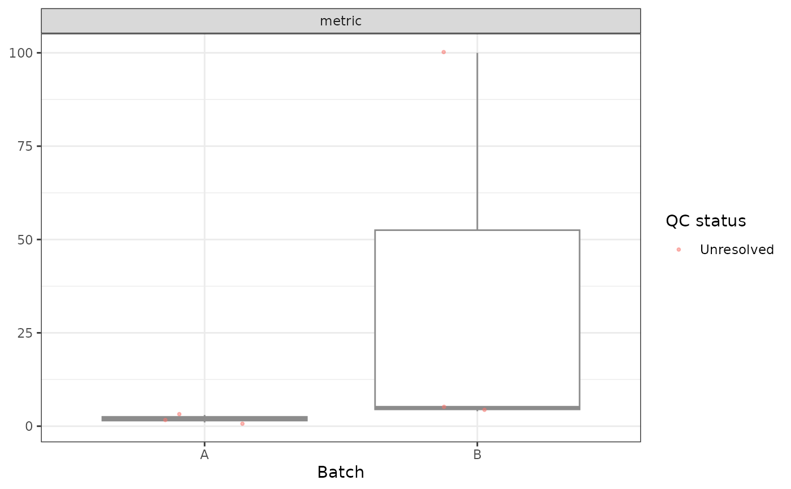

Show raw metric values by batch with flagged and unresolved observations
highlighted. Each metric has its own panel. Requires ggplot2.
Arguments
- data
Annotated data frame or Seurat object returned by
mad_qc().- metrics
Character vector of annotated numeric metric columns.
- batch
Optional non-missing vector with one batch label per observation. If omitted, plot all observations in one group.
Examples
if (requireNamespace("ggplot2", quietly = TRUE)) {
x <- data.frame(metric = c(1:5, 100), sample = rep(c("A", "B"), each = 3))
x <- mad_qc(x, c(metric = "upper"), batch = x$sample, verbose = FALSE)
plot_mad_qc(x, "metric", batch = x$sample)
}
#> Warning: Insufficient usable observations for metric(s): metric [A], metric [B].
